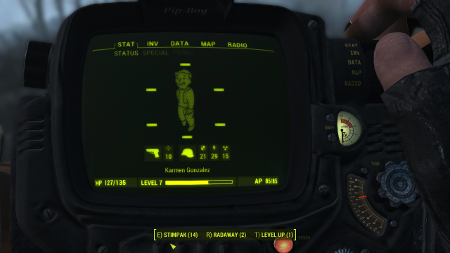
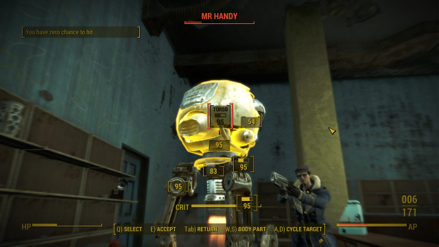
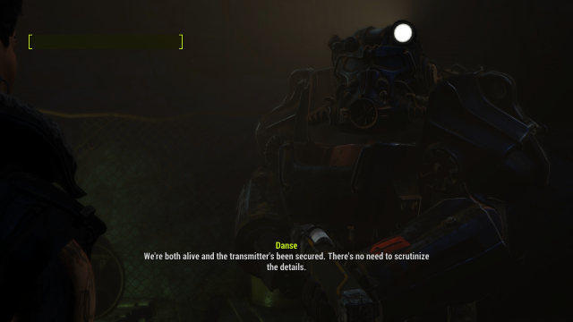
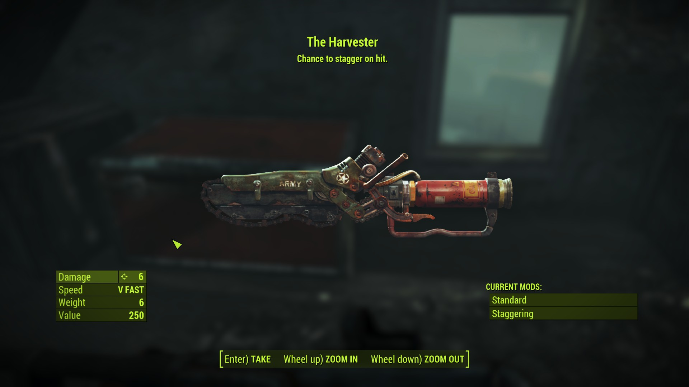

 The Pip-Boy, created by Vault-Tec, is probably the most iconic piece of equipment offered by the Fallout games. There is a different varient in each game, showcasing the style of technology of the year the game takes place in. It is a visual representation of the technological advancments throughout the franchise as it becomes more streamlined and offers more features.
In-game, the Pip-Boy is issued to anyone assinged to a Vault. As the player characters for each mainline game is from a Vault (with the exception of New Vegas, where you receive one from a former Vault Dweller), they all have a Pip-Boy by default which acts as an inventory, HUD, map, radio, and quest log for the player.
Vault Boy, the mascot for the Fallout franchise, is seen within the Pip-Boy's UI as a representation of the player as well as the perk and SPECIAL systems.
 The Vault-Tec Assisted Targeting System (V.A.T.S.) appears in Fallout 3, 4, 76, and New Vegas. Technically, it is inspired by the ability to target individual body aparts, a feature in the original two games, but evolved to function better in a 3D environment. It is activated by the player using a keybind (on a keyboard) or a button press (on a controller) to help the player easily target an enemy. In Fallout 3 and New Vegas, time is completely stopped while the player is shown a percentage chance of hitting the selected body part. The number of times they can attack that body part is accounted for with their Ability Points. In Fallout 4, instead of time stopping completely, time instead slows down drastically, but otherwise is functionally the same. Fallout 76 makes the largest changes with time not changing at all and it functioning more as an auto-targeting system that works in real-time.
 Clothing, armor, and power armor are all equippible items that keep the player character alive, longer. Armor and power armor add to the Damage Threshold, which helps mitigate damage, while clothing has no DT and instead is heavier on SPECIAL stat boosts. Carrying something for every occassion can be cumbersome, but helpful for someone not well versed in combat or skill checks. Sometimes that +1 Charisma really makes the difference.
Power armor is in a league all it's own. Created before the Great War in the Old World, it was used by infantry men going into battle as a means of both defense and offense. Power armor has an incredibly high DT rating, but it's metal skeleton adds to a wearers strength, allowing heavy weapons like miniguns and rocket launchers to be easily handeled. They initially ran on small energy cells, but eventually switched to run on fusion cores, a special type of nuclear battery. Specialized training is required to understand the proper usage and wear of power armor and it cannot be picked up by just anyone. Maintance is also very complicated and should not be taken lightly.
 A good sidearm can be the difference between life and death in the Wasteland. A good gun is the most popular choice by far, but melee weapons such as knives and blunt weapons are also well-used. Even obscure items like pool cues and golf clubs are viable if someone's swing is strong enough. For the truly obsurd (and strong), there is also the flamethrower or minigun as an option.
Weapons were generally not allowed into Vaults (except for a select few), so after the bombs dropped, any remaining survivors either had their own weapons or they raided abandoned homes looking for means of protection. Some servicemen were expected to stay above ground, so National Guard armories and posts were quick targets for the desperate. Some ammunition factories were still useable after the dust settled, allowing the creation of more ammunition.
The SPECIAL system, which stands for the seven attributes selected by the player upon character creation, is the starting point of making a good (or lousy) character. The stats are: Strength, Perception, Endurance, Charisma, Intelligence, Agility, and Luck. Each attribute governs a set of skills, and increasing an attribute also increases those skills. A mixture of attributes and skills determines avaliable perks
Skills determine how a character will be played. While attributes give a general shape to a playstyle, skills help fine-tune it. They determine what the character specalizes in in combat (small guns, big guns, melee, explosives, energy weapons), if they are good at lockpicking or hacking computers. If they have high medicine skills or are good at sneaking. All these skills play into really fleshing out a character and changing NPC interactions with each playthrough.
The Perk and Trait systems are seperate, but lean into each other to create one central concept. Traits are picked during character creation, and add a certain buff to the character to help define them as a person. These traits, however, generally come with some sort of negative side effect that balances them out. They can be anything from requiring the character to wear glasses to having major buffs but only at night. Perks, are different in that they offer no downsides but are only avaliable on level up. Certain perks only become avaliable at a specfic level or when the required SPECIAL or skill level is reached. Perks vary from combat buffs, to stealth options or recipes. They can even show up as special dialogue options previously not avaliable.
The karma system exists in some capacity in all games except Fallout 4 and 76. The characters karma level is determined by actions taken in game, and has direct effects both on the character and events around them. Neutral karma has a stat of 0, while good karma is in the positives and bad karma is in the negatives. Karma is never static and can fluctuate throughout the game as different deeds are done and actions are taken. Murder, for instance, causes a loss in karma, while helping someone causes a karma gain.
Companions are humanoids, dogs, and robots that fight by the players side. They vary greatly, but it should be easy to find the right one for any playthrough, and if not, there's always Dogmeat. Some require the character to be in a specific faction or have a certain level of karma. Some are mecenaries and will only work if paid. Sometimes a quest has to be completed first to unlock the ability to have them tag along. Their ability to live and die also varies from game to game. In Fallout 4, for instance, they are immortal, while in Fallout 3 they are completely mortal and killable. They have different levels of customization throughout the games, but always add welcome commentary and a second gun to the game.